Loading navbar...
Super Smash Bros. Extras
Super Smash Bros. Desktop Icons
Archived from an old version of The Mushroom Kingdom (classicgaming.com/tmk).
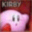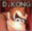
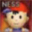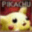
DOWNLOAD
12 .ico files zipped (Windows) (24.9 KB)
Super Smash Bros. Melee MIDI
Super Smash Bros. Melee - Yoshi (Polyphonic) Mobile Phone Ringtone.midi
15 KB
Your browser does not support the
audio
element.
 Super Smash Bros. Melee - Yoshi (Polyphonic) Mobile Phone Ringtone.midi
Super Smash Bros. Melee - Yoshi (Polyphonic) Mobile Phone Ringtone.midi

 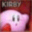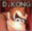
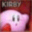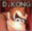

 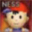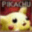
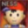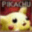

 12 .ico files zipped (Windows) (24.9 KB)Super Smash Bros. Melee - Yoshi (Polyphonic) Mobile Phone Ringtone.midi
12 .ico files zipped (Windows) (24.9 KB)Super Smash Bros. Melee - Yoshi (Polyphonic) Mobile Phone Ringtone.midi